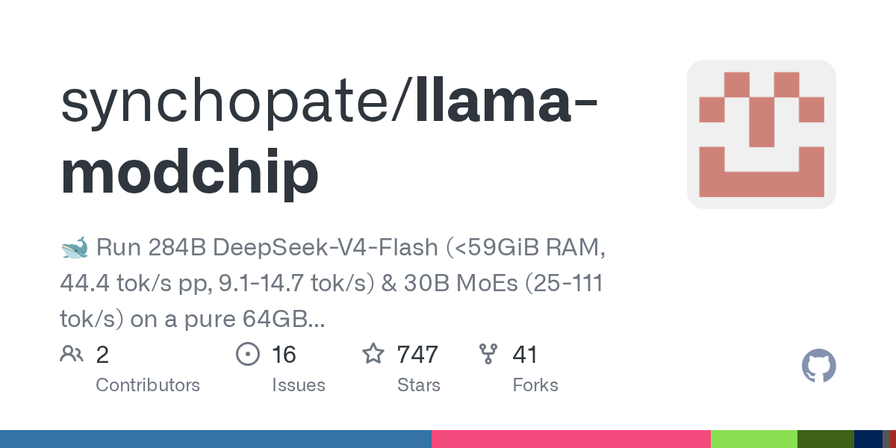

Пока все бьются за видеокарты, энтузиасты доказывают: большие модели уже живут на обычном железе. Проект llama-modchip за одиннадцать дней собрал почти 750 звёзд: автор взял DeepSeek-V4-Flash на 284 млрд параметров и ужал её до 56,5 ГБ — модель влезает в 64 ГБ обычной оперативки и пишет 9–15 токенов/с на игровом ноутбуке, без единой видеокарты.
Секрет не в одной «злой» квантизации. Автор гоняет MoE-архитектуру слоями: «горячие» слои лежат в Q4_0/Q8_0, холодные эксперты — в своей схеме Fractal-64 (в среднем 1,7 бита на вес), плюс спекулятивный «драфтер» из шахматного движка Stockfish и разогрев контекста через `/dev/shm`. Для 30-миллиардных MoE тот же рецепт даёт уже 25–60 токенов/с — вполне рабочая скорость. Есть ветка ARM64 (NEON/SVE) и Apple Metal, патчи под Zen 5 и Threadripper, открытый лидерборд машин — от ThinkPad до серверов на DDR4-регистжах.
Второй герой недели — Strata: 42 тысячи звёзд, установщик в одну команду для Windows/Linux/Mac, свой движок, OpenAI-совместимый API на localhost и готовый десктоп. Показательно, что Strata запускает в том числе свежий Qwen3.8-Flash-Next — ту же модель, что обычно требует сервера с GPU: на RTX 3060 с 46 ГБ памяти выдаёт 9–11 токенов/с, а на «чистом CPU» — до 20 с лишним.
Честные оговорки: замеры в обоих случаях авторские, независимо никто их пока не перепересчитывал; llama-modchip — проект 11-дневной давности от одного автора с готовыми бинарями (в изолированном контейнере, не иначе), а память съедается «впритык» — браузер рядом с 284B уже не откроешь. И ни Ollama, ни LM Studio эти файлы не подхватят — нужны сборки авторов.
Но тренд читается третий месяц подряд (наш январский герой запускал 2,8-триллионную Kimi K3 на CPU-сервере за 500 долларов, теперь черед «средних» монстров): агрессивные квантизаторы + MoE-развесовка превращают простаивающие CPU-серверы и офисные ПК во вполне usable инференс. Для бэкапа, локального «мозга» без облака и сценариев «интернет и GPU вырублены» — уже не фантастика, а инструкция на вечер. 🧠